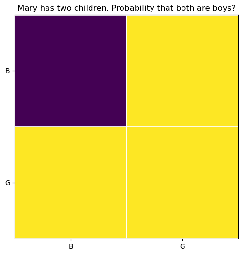
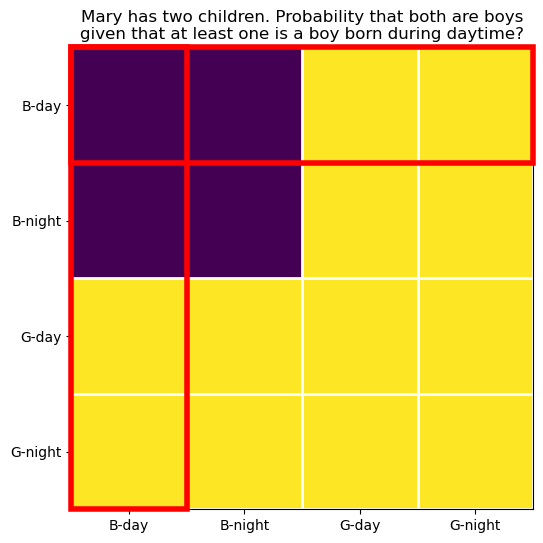

30 the boy-girl paradox
Mary has two children.
- Q0 What is the probability that both children are boys?
- Q1 What is the probability that both children are boys, given that at least one is a boy?
- Q2 What is the probability that both children are boys, given that at least one is a boy born during daytime?
- Q3 What is the probability that both children are boys, given that at least one is a boy born on a Sunday?
- Q4 What is the probability that both children are boys, given that at least one is a boy born on the 1st of the month?
Successively, we added more stringent condtions on the original problem. We will first solve this problem analytically and then visually.
30.1 analytical solution
Let’s denote by j \in {1,2} the child index, and by B_j and G_j the events that child j is a boy or a girl. We call Q_j=B_j \cap T_j the “Qualified Boy” event, meaning that child j is a boy and has the trait T_j (being born during daytime, or on a Sunday, or on the 1st of the month). Because the probability of being a boy is P(B_j)=1/2, and the probability of having trait T_j is P(T_j), we have:
P(Q_j) = P(B_j) \cdot P(T_j) = \frac{1}{2} P(T_j), where we assumed independence between sex and trait.
All of the questions above ask, in mathematical notation,
P(B_1 \cap B_2 \mid Q_1 \cup Q_2).
Let’s translate that to English:
- What is the probability, P()
- that child 1 is a boy, B_1
- and, \cap
- that child 2 is a boy, B_2,
- given that, \mid
- either child (at least one), \cup
- is a qualified boy, Q_1 or Q_2.
The table below summarizes the qualifications and their probabilities for each question:
| Question | Qualification Q_j | P(Q_j) |
|---|---|---|
| Q0 | None | 1 |
| Q1 | Boy | 1/2 |
| Q2 | Boy born during daytime | 1/2\times 1/2 |
| Q3 | Boy born born on a Sunday | 1/2\times 1/7 |
| Q4 | Boy born on the 1st of month | 1/2\times 1/30 |
Question Q0 is a special case where there is no qualification, so Q_j is always true, with probability 1. We can solve that one directly: the possible combinations of children are BB, BG, GB, GG, so the probability that both are boys is 1/4. In mathematical notation: P(B_1 \cap B_2) = P(B_1)P(B_2) = \frac{1}{2} \times \frac{1}{2} = \frac{1}{4}.
To solve the qualified cases (Q1 through Q4), we use Bayes’ theorem:
P(A \mid B) = \frac{P(B \mid A)P(A)}{P(B)},
where
- A is the event that both children are boys, B_1 \cap B_2,
- B is the event that at least one child is a qualified boy, Q_1 \cup Q_2.
So we need to solve
P(B_1 \cap B_2 \mid Q_1 \cup Q_2) = \frac{P\left( \left(Q_1 \cup Q_2\right) \mid \left(B_1 \cap B_2\right)\right) P\left(B_1 \cap B_2\right)}{P\left(Q_1 \cup Q_2\right)}.
30.1.1 numerator
P\left( \left(Q_1 \cup Q_2\right) \mid \left(B_1 \cap B_2\right)\right) P\left(B_1 \cap B_2\right).
The second term is easy: P\left(B_1 \cap B_2\right) = P(B_1)P(B_2) = \frac{1}{2} \times \frac{1}{2} = \frac{1}{4}, since the children’s sexes are independent.
The first term is: P\left( \left(Q_1 \cup Q_2\right) \mid \left(B_1 \cap B_2\right)\right), or in English: given that we know both children are boys, what is the probability that at least one of them is a qualified boy? We formulated the qualified boy as Q_j = B_j \cap T_j, but now we know that B_j is true, that is, B_j=1, so we can simplify Q_j to just T_j. So we need to calculate P\left( T_1 \cup T_2\right).
The probability that at least one child has trait T is more easily calculated via its complement, the probability that neither child has trait T:
P\left( T_1 \cup T_2\right) = 1 - P\left(\text{neither } T_1 \text{ nor } T_2 \right) = 1 - (1-p)^2 = 2p - p^2, where we used independence between the two children, and denoted p=P(T_j).
Thus, the numerator is: P\left( \left(Q_1 \cup Q_2\right) \mid \left(B_1 \cap B_2\right)\right) P\left(B_1 \cap B_2\right) = (2p - p^2) \cdot \frac{1}{4} = \frac{p}{4}(2 - p).
30.1.2 denominator
P\left(Q_1 \cup Q_2\right). Using the inclusion-exclusion principle, we have: P\left(Q_1 \cup Q_2\right) = P(Q_1) + P(Q_2) - P(Q_1 \cap Q_2). Because the two children are independent, we have: P(Q_1 \cap Q_2) = P(Q_1)P(Q_2) = \left(\frac{p}{2}\right)^2 = \frac{p^2}{4}. Thus, the denominator is: P\left(Q_1 \cup Q_2\right) = \frac{p}{2} + \frac{p}{2} - \frac{p^2}{4} = p - \frac{p^2}{4} = \frac{p}{4}\left(4 - p\right).
30.1.3 final result
Finally, putting everything together, we have: P(B_1 \cap B_2 \mid Q_1 \cup Q_2) = \frac{\frac{p}{4}(2 - p)}{\frac{p}{4}\left(4 - p\right)} = \frac{2 - p}{4 - p}. We can now plug in the values of p for each question:
| Question | P(T_j)=p | Answer |
|---|---|---|
| Q0 | None | 1/4=0.25 |
| Q1 | 1 | \frac{1}{3} \approx 0.333 |
| Q2 | 1/2 | \frac{3}{7} \approx 0.429 |
| Q3 | 1/7 | \frac{13}{27} \approx 0.481 |
| Q4 | 1/30 | \frac{59}{119} \approx 0.496 |
When no qualifications are made, the probability is 1/4. When qualifications are made, the probability increases, approaching 1/2 as the qualification becomes more stringent.
The algebra is done, but I’m left with an uneasy feeling. WHY?! What does it really matter what day of the week the boy was born on? How can that possibly affect the result?!
30.2 visual solution
30.2.1 Q0, what is the probability that both children are boys?
In this non-qualified case, there are four equally likely possibilities for the two children: BB, BG, GB, GG. It is obvious that only one of these four possibilities corresponds to both children being boys (purple square), so the probability is 1/4.
visualizing Q0
fig, ax = plt.subplots(figsize=(6, 6))
N = 2
a = np.ones((N,N))
a[0,0] = 0
im = ax.imshow(a,
interpolation='none', vmin=0, vmax=1, aspect='equal')
# Major ticks
ax.set_xticks(np.arange(0, N, 1))
ax.set_yticks(np.arange(0, N, 1))
# Labels for major ticks
ax.set_xticklabels(["B", "G"])
ax.set_yticklabels(["B", "G"])
# Minor ticks
ax.set_xticks(np.arange(-.5, N, 1), minor=True)
ax.set_yticks(np.arange(-.5, N, 1), minor=True)
# Gridlines based on minor ticks
ax.grid(which='minor', color='w', linestyle='-', linewidth=2)
# Remove minor ticks
ax.tick_params(which='minor', bottom=False, left=False)
ax.set_title("Mary has two children. Probability that both are boys?");
30.2.2 Q1, what is the probability that both children are boys, given that at least one is a boy?
We divide the question into two parts: the qualification and the target event.
The target event is the purple square, where both children are boys.
The qualification is represented by the red rectangles.
Show the code
fig, ax = plt.subplots(figsize=(6, 6))
N = 2
a = np.ones((N,N))
a[0,0] = 0
im = ax.imshow(a,
interpolation='none', vmin=0, vmax=1, aspect='equal')
# Major ticks
ax.set_xticks(np.arange(0, N, 1))
ax.set_yticks(np.arange(0, N, 1))
# Labels for major ticks
ax.set_xticklabels(["B", "G"])
ax.set_yticklabels(["B", "G"])
# Minor ticks
ax.set_xticks(np.arange(-.5, N, 1), minor=True)
ax.set_yticks(np.arange(-.5, N, 1), minor=True)
# Gridlines based on minor ticks
ax.grid(which='minor', color='w', linestyle='-', linewidth=2)
# Remove minor ticks
ax.tick_params(which='minor', bottom=False, left=False)
rect = patches.Rectangle((-0.5, -0.5), N, 1,
linewidth=4,
edgecolor='red',
facecolor='none',
clip_on=False,
zorder=10)
ax.add_patch(rect)
rect = patches.Rectangle((-0.5, -0.5), 1, N,
linewidth=4,
edgecolor='red',
facecolor='none',
clip_on=False,
zorder=10)
ax.add_patch(rect)
ax.set_title("Mary has two children. Probability that both are boys\ngiven that at least one is a boy?");
The horizontal rectangle corresponds to the first child being a boy, and the vertical rectangle corresponds to the second child being a boy. The squares inside the red rectangles represent the remaining possibilities after the qualification. Each rectangle is 2\times 1, the number 1 representing the constraint that at least one child is a boy, and the number 2 representing the two equally likely possibilities for the other child. The total number of squares inside the red rectangles is:
D = (2 \times 1)\cdot 2 - 1 = 3.
- (2 \times 1) is the size of each rectangle,
- \cdot 2 because there are two rectangles,
- -1 because the square on the top left corner is counted twice (it is inside both rectangles).
Of the remaining possibilities (D=3), only one (N=1) corresponds to both children being boys (the purple square).
The probability is therefore: P = \frac{N}{D} = \frac{1}{3} \approx 0.333.
30.2.3 Q1, what is the probability that both children are boys, given that at least one is a boy born during daytime?
The target event is still the purple square, where both children are boys.
The qualification is now represented by larger red rectangles.
Show the code
fig, ax = plt.subplots(figsize=(6, 6))
N = 4 # 2*2
a = np.ones((N,N))
a[0:2,0:2] = 0
# a[0,:] = 0.2
im = ax.imshow(a, interpolation='none', vmin=0, vmax=1, aspect='equal')
# Major ticks
ax.set_xticks(np.arange(0, N, 1))
ax.set_yticks(np.arange(0, N, 1))
# Labels for major ticks
ax.set_xticklabels(["B-day", "B-night", "G-day", "G-night"])
ax.set_yticklabels(["B-day", "B-night", "G-day", "G-night"])
# Minor ticks
ax.set_xticks(np.arange(-.5, N, 1), minor=True)
ax.set_yticks(np.arange(-.5, N, 1), minor=True)
# Gridlines based on minor ticks
ax.grid(which='minor', color='w', linestyle='-', linewidth=2)
# Remove minor ticks
ax.tick_params(which='minor', bottom=False, left=False)
rect = patches.Rectangle((-0.5, -0.5), N, 1,
linewidth=4,
edgecolor='red',
facecolor='none',
clip_on=False,
zorder=10)
ax.add_patch(rect)
rect = patches.Rectangle((-0.5, -0.5), 1, N,
linewidth=4,
edgecolor='red',
facecolor='none',
clip_on=False,
zorder=10)
ax.add_patch(rect)
ax.set_title("Mary has two children. Probability that both are boys\ngiven that at least one is a boy born during daytime?");
Each rectangle is 2\cdot 2 over 1 squares, where
- the number 1 represents the constraint that at least one child is a boy born during daytime,
- the first 2 represents the two equally likely possibilities for the sex of the other child,
- the second 2 represents the two equally likely possibilities for the time of birth (daytime or nighttime).
The total number of squares inside the red rectangles is: D = (2 \cdot 2)\cdot 2 - 1 = 7.
The factor (2 \cdot 2) is the length of the rectangles, we multiply by 2 because there are two rectangles, and we subtract 1 because the square on the top left corner is counted twice (it is inside both rectangles).
How many of those squares correspond to both children being boys (the intersection of the red rectangle and the purple square)? The reasoning of discounting the overlap square still holds, but clearly half of each original red rectangle should be discarded, since only half lay in the purple region:
N = \frac{(2 \cdot 2)}{2}\cdot 2 - 1 = 3.
The probability is therefore: P = \frac{N}{D} = \frac{3}{7} \approx 0.429.
30.2.4 Q2, what is the probability that both children are boys, given that at least one is a boy born on a Sunday?
It seems that a pattern is emerging.
The target event is still the purple square, as before.
Show the code
fig, ax = plt.subplots(figsize=(6, 6))
N = 2*7
a = np.ones((N,N))
a[0:7,0:7] = 0
# a[0,:] = 0.2
im = ax.imshow(a, interpolation='none', vmin=0, vmax=1, aspect='equal')
# Major ticks
ax.set_xticks(np.arange(0, N, 1))
ax.set_yticks(np.arange(0, N, 1))
# Labels for major ticks
labels = [f"B{x+1:d}" for x in range(7)] + [f"G{x+1:d}" for x in range(7)]
ax.set_xticklabels(labels)
ax.set_yticklabels(labels)
# Minor ticks
ax.set_xticks(np.arange(-.5, N, 1), minor=True)
ax.set_yticks(np.arange(-.5, N, 1), minor=True)
# Gridlines based on minor ticks
ax.grid(which='minor', color='w', linestyle='-', linewidth=2)
# Remove minor ticks
ax.tick_params(which='minor', bottom=False, left=False)
rect = patches.Rectangle((-0.5, -0.5), N, 1,
linewidth=4,
edgecolor='red',
facecolor='none',
clip_on=False,
zorder=10)
ax.add_patch(rect)
rect = patches.Rectangle((-0.5, -0.5), 1, N,
linewidth=4,
edgecolor='red',
facecolor='none',
clip_on=False,
zorder=10)
ax.add_patch(rect)
ax.set_title("Mary has two children. Probability that both are boys\ngiven that at least one is a boy born on a Sunday?");
The red rectangles are now 2\cdot 7 over 1 squares, where 1 represents the constraint that at least one child is a boy born on a Sunday, 2 represents the two equally likely possibilities for the sex of the other child, and 7 represents the seven equally likely possibilities for the day of the week of birth.
The total number of squares inside the red rectangles is: D = (2 \cdot 7)\cdot 2 - 1 = 27.
Of those squares, the number that lay in the purple region is: N = \frac{(2 \cdot 7)}{2}\cdot 2 - 1 = 13.
The probability is therefore: P = \frac{N}{D} = \frac{13}{27} \approx 0.481.
30.2.5 generalization
We can generalize the calculation above for any trait with k equally likely possibilities:
\begin{align*} D & = (2 \cdot k)\cdot 2 - 1 = 4k - 1, \\ N & = \frac{(2 \cdot k)}{2}\cdot 2 - 1 = 2k - 1, \\ P & = \frac{N}{D} = \frac{2k - 1}{4k - 1}. \end{align*}
This is very similar to the analytical result we obtained before. Indeed, substituting k=1/p in the result above yields the same expression: P = \frac{2 - p}{4 - p}.
30.3 the moral explanation
Mathematicians use the word “moral” to refer to explanations that capture the underlying reason why something must be true, rather than just providing a mechanical, step-by-step verification. See this last image, for the case that at least one on the children is a boy born on the 1st of the month.
Show the code
fig, ax = plt.subplots(figsize=(6, 6))
N = 2*30
a = np.ones((N,N))
a[0:30,0:30] = 0
# a[0,:] = 0.2
im = ax.imshow(a, interpolation='none', vmin=0, vmax=1, aspect='equal')
# Major ticks
ax.set_xticks(np.arange(0, N, 1))
ax.set_yticks(np.arange(0, N, 1))
# Labels for major ticks
# labels = [f"B{x+1:d}" for x in range(7)] + [f"G{x+1:d}" for x in range(7)]
ax.set_xticklabels([])
ax.set_yticklabels([])
# Minor ticks
ax.set_xticks(np.arange(-.5, N, 1), minor=True)
ax.set_yticks(np.arange(-.5, N, 1), minor=True)
# Gridlines based on minor ticks
ax.grid(which='minor', color='w', linestyle='-', linewidth=1)
# Remove minor ticks
ax.tick_params(which='minor', bottom=False, left=False)
rect = patches.Rectangle((-0.5, -0.5), N, 1,
linewidth=4,
edgecolor='red',
facecolor='none',
clip_on=False,
zorder=10)
ax.add_patch(rect)
rect = patches.Rectangle((-0.5, -0.5), 1, N,
linewidth=4,
edgecolor='red',
facecolor='none',
clip_on=False,
zorder=10)
ax.add_patch(rect)
ax.set_title("Mary has two children. Probability that both are boys\ngiven that at least one is a boy born on the 1st of the month?");
We can see that the answer we are seeking is the ratio between the number of purple squares inside the red rectangles and the total number of squares inside the red rectangles (discounting the overlap square for each of them). As the qualification becomes more stringent (the trait has more equally likely possibilities), the red rectangles become taller and taller, and this ratio approaches 1/2. The act of discounting the overlap square becomes negligible for large k, since it is only one square out of many.
In question Q1, saying that one child is a boy is a vague statement. Which of them? Could be either. This great vagueness comes from the huge overlap between the two red rectangles. In question Q4, saying that one child is a boy born on the 1st of the month is a very specific statement. Almost certainly it could only be one of the children, since it is very unlikely that both children were born on the 1st of the month. This lack of vagueness comes from the tiny overlap between the two red rectangles. A super specific qualification effectively points at a specific child, and thus the problem reduces to finding the probability that the other child is a boy, which is clearly 1/2. That is the moral argument.
I have two children. One is a boy, born on 29 February, he plays the flute, goes to karate classes, and got stiches in his chin last summer after a minor bike accident. What is the probability that my other child is also a boy? We can all agree that there is very little doubt that I’m talking about a specific child, since it is so unlikely that both children share all those traits. Therefore, the probability that my other child is a boy is 1/2.
30.4 information
When I first heard this “paradox”, I could not fathom how adding irrelevant information (the day of the week of birth) could possibly affect the answer. As we have seen, it does. I want to quantify the amount of information added by the qualification.
As we saw in the cross-entropy chapter, we can use the Kullback-Leibler divergence to quantify the information gained when updating our beliefs from a prior distribution to a posterior distribution:
D_{KL}(P \| Q) = \sum_i P(i) \log\frac{P(i)}{Q(i)}, where P is the posterior distribution and Q is the prior distribution. The greater the difference between the two distributions, the greater the information gain. Another way to say this is that the qualification that most changes our beliefs is the one that provides the most information.
Before we plug in the numbers, we need to define the prior and posterior distributions.
- \mathbf{q}, Prior distribution: our belief about the sex of the second child before knowing anything about the first child. This is simply \mathbf{q} = \begin{bmatrix} P(B_2) \\ P(G_2) \end{bmatrix} = \begin{bmatrix} 1/2 \\ 1/2 \end{bmatrix}.
- \mathbf{p}, Posterior distribution: our belief about the sex of the second child after knowing that at least one child is a qualified boy. This is \mathbf{p} = \begin{bmatrix} P(B_2) \\ P(G_2) \end{bmatrix} = \begin{bmatrix} \frac{2 - p}{4 - p} \\ 1-\frac{2 - p}{4 - p} \end{bmatrix}.
Plugging in these values, we can calculate the Kullback-Leibler divergence for a qualification with probability p:
D_{KL}(\mathbf{p} \| \mathbf{q}) = \frac{2 - p}{4 - p} \log\left(\frac{2 - p}{4 - p} \cdot \frac{1}{1/2}\right) + \left(1-\frac{2 - p}{4 - p}\right) \log\left(\left(1-\frac{2 - p}{4 - p}\right) \cdot \frac{1}{1/2}\right).
There are other possibilities to consider regarding the prior distribution. For example, what if we considered the joint distribution of both children, instead of just the second child? In this case, the prior distribution would be: \mathbf{q} = \begin{bmatrix} P(B_1 \cap B_2) \\ P(B_1 \cap G_2) \\ P(G_1 \cap B_2) \\ P(G_1 \cap G_2) \end{bmatrix} = \begin{bmatrix} 1/4 \\ 1/4 \\ 1/4 \\ 1/4 \end{bmatrix}.
and the posterior distribution would be: \mathbf{p} = \begin{bmatrix} P(B_1 \cap B_2) \\ P(B_1 \cap G_2) \\ P(G_1 \cap B_2) \\ P(G_1 \cap G_2) \end{bmatrix} = \begin{bmatrix} \frac{2 - p}{4 - p} \\ \frac{1}{4 - p} \\ \frac{1}{4 - p} \\ 0 \end{bmatrix}.
- The first entry corresponds to both children being boys. This expression is what we found before.
- The last entry corresponds to both children being girls, which is impossible given the qualification, so its probability is zero.
- The two middle entries correspond to one boy and one girl, which are equally likely, so they have the same probability. Since the total probability must sum to one, each of them has probability \frac{1}{4 - p}.
Let’s plot the Kullback-Leibler divergence for both definitions of prior and posterior distributions, as a function of p.
Show the code
fig, ax = plt.subplots(3, 1,figsize=(8, 8), sharex=True)
fig.subplots_adjust(hspace=0.1)
p = np.linspace(0.001, 1, 100)
q1A, q2A = [1/2, 1/2]
q1B, q2B = [1/4, 1/4]
p1 = lambda p: (2 - p) / (4 - p)
p2 = lambda p: 1 - p1(p)
DKL_A = lambda p: p1(p) * np.log2(p1(p) / q1A) + p2(p) * np.log2(p2(p) / q2A)
DKL_B = lambda p: p1(p) * np.log2(p1(p) / q1B) + 2*(p2(p)/2) * np.log2((p2(p)/2) / q2B)
ax[0].plot(p, p1(p), lw=2, label=r"$P(\mathrm{BB} \mid \mathrm{B})$")
ax[0].plot(p, 0*p+0.5, lw=1, ls='--', color='gray')
ax[1].plot(p, DKL_A(p), lw=2)
# ax[1].plot(p, 0*p, lw=1, ls='--', color='gray')
ax[0].set(ylabel="probability that the\nother child is a boy")
ax[1].set(ylabel=r"Information gain ($D_{KL}$, bits)")
ax[2].plot(p, DKL_B(p), lw=2)
ax[2].set(xlabel="p: probability of the specific trait",
ylabel=r"Information gain ($D_{KL}$, bits)")
labels = ["Q1", "Q2", "Q3", "Q4"]
ps = [1, 1/2, 1/7, 1/30]
for i, p_val in enumerate(ps):
ax[0].plot([p_val], [p1(p_val)], ls=None, marker='o', markerfacecolor='None', markeredgecolor='red', markersize=8, markeredgewidth=2)
ax[0].text(p_val+0.02, p1(p_val), labels[i], ha='left')
ax[1].plot([p_val], [DKL_A(p_val)], ls=None, marker='o', markerfacecolor='None', markeredgecolor='red', markersize=8, markeredgewidth=2)
ax[1].text(p_val-0.06, DKL_A(p_val), labels[i], ha='left')
ax[2].plot([p_val], [DKL_B(p_val)], ls=None, marker='o', markerfacecolor='None', markeredgecolor='red', markersize=8, markeredgewidth=2)
ax[2].text(p_val-0.06, DKL_B(p_val), labels[i], ha='left')
ax[1].text(0.5, 0.98, "Prior: other child is equally likely to be a boy or a girl", ha='center', transform=ax[1].transAxes, va='top')
ax[2].text(0.5, 0.98, "Prior: joint distribution of both children", ha='center', transform=ax[2].transAxes, va='top');
Some considerations:
- Question Q0 does not appear on the graph because there is no qualification, there is no p to plot.
- In the top graph we see that as the qualification becomes more stringent (smaller p), the probability that the other child is a boy increases from 1/3 to 1/2.
- In the middle and bottom graphs we see divergent behavior of the information gain as p approaches zero, depending on the choice of prior distribution.
- When considering only the second child (middle graph), the information decreases to zero with increasing qualification (read graph from right to left). This makes sense, because we initally assumed that the other child was equally likely to be a boy or a girl, and that’s exactly what we end up believing when the qualification becomes very stringent. The qualification that gives maximum information is “at least one of the children is a boy”.
- When considering the joint distribution of both children (bottom graph), the information increases with increasing qualification (read graph from right to left): we initially believed that all four combinations of children were equally likely (1/4), but the more stringent the qualification, the more certain we become that we’re talking about a specific child, and thus the problem reduces to finding the probability that the other child. In this case, the qualification that gives maximum information is the most specific one.
30.5 obsevation vs information
This is a beautiful example of the difference between observation and information. Data alone does not contain information. In the information theory sense, information is a measure of how much our beliefs (priors) change when we observe data.
- The simple observation “at least one child is a boy” provides the maximum information for one choice of prior distribution (middle graph), and the least information for the other choice of prior distribution (bottom graph).
- The very specific and long observation “at least one child is a boy born on 29 February, he likes sushi but doesn’t like pasta, and he dreams of becoming an animal ophthalmologist” provides almost zero information for one choice of prior distribution, and (almost) maximum information for the other choice of prior distribution.
The arguments above are very much related to the idea of “theory-ladenness of observation” in the philosophy of science. Laden means “heavily loaded”, and the idea is that every observation we make only has meaning within a theoretical framework: our prior beliefs, theories, and expectations. This philosophical idea goes against empiricism, which states that knowledge comes only or primarily from sensory experience. The accumulation of sensory experiences alone does not lead to knowledge without our expectations of how the world works.